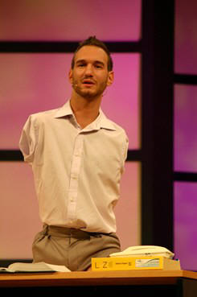
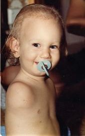
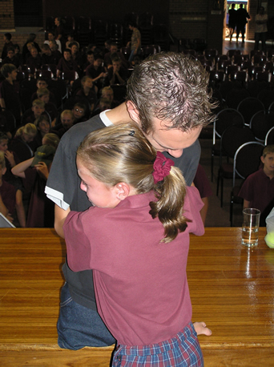

他的名字叫 Nick，他生來沒手沒腳，今天，他的故事能觸動世界上千萬顆心，他要歸榮耀給上帝！醫生對此與生俱來的「瑕疵」，沒給任何的醫學解釋！他可以想像---他面對了許多的挑戰和障礙。他的父母都是基督徒，甚至他父親是一位牧師。他們的長子「沒手沒腳」地誕生在這個家庭！他們沒有任何預警也沒有時間來應對，醫生們除了震驚外，也沒有給任何解釋，直到如今仍舊沒有任何醫學解釋。
當時全教會為他的出生和他父母的遭遇而傷痛的景況可以舉世震驚來形容，每個人都在問：「假如上帝真是一位愛人的神，為何這樣遭糕的事情發生在任何人就算了，而竟然讓它發生在一個牧師的家中」？
這是換行
他父親起初以為他可能活不了多久，但經過檢查發現---他是個健康的男嬰，只是有些肢體不見了！

可以想見，當時父母對他將來所要面對的生活，有著沉重且明顯的憂慮與恐懼。
幸好，上帝給他們力量、智慧和勇氣度過了他的幼年歲月。
他長大到上學的年齡，因他的肢體殘障，無法進入主流的教育體系，上帝給媽力量，去爭取法律的改變。使他成了澳洲第一批能進入主流教育體系的殘障學生之一。他喜愛上學，並且盡力想過得像別人一樣，但在早期就學的時光中，遭受到很不舒服的對待，像是被棄絕、作弄、欺凌，其原因僅僅是生理上的差異！
這對他來說是很難接受的，但在父母的支持下，他找到了可以助他勝過那些挑戰的態度與價值觀。他確信外在雖然不同，但裡面的他是不輸給任何其他人的。
許多次當他心情低落到不想上學，想藉此可以逃避那些負面的關注，爸媽就鼓勵他不要去理會那些負面的東西，試著去與一些同學說話、結交朋友，很快的，同學們認知到他並非異類，從此上帝就不斷地賜福加添給他新的朋友。
很多時候，他會因著無法改變他的樣子而感到沮喪和憤怒。
 在主日學到上帝愛我們所有的人，並眷顧你我。
他了解這份愛，但不了解既然上帝愛他，爲什麼又要如此造他？他做錯了什麼事嗎？他是學校所有孩子中唯一的怪ㄎㄚ！
他覺得對於週遭的人而言，他是一個包袱，越快離開對他們越好。他想要結束這痛苦及年少的生命，但每當想到父母及家人總在需要的時候安慰他、給他力量，他就感恩不已！
因為經歷各種欺凌、自憐、孤寂的情緒爭戰，上帝在他裡面深植了一份熱情，讓可以分享故事與經歷來幫助他人勝過生命中各樣的挑戰，並且上帝將他們一一化為祝福。要鼓舞激勵人們活出最大的潛能，不讓任何事物阻擋了夢想完成之路。他所要學的第一課就是「勿將萬事視作理所當然」。